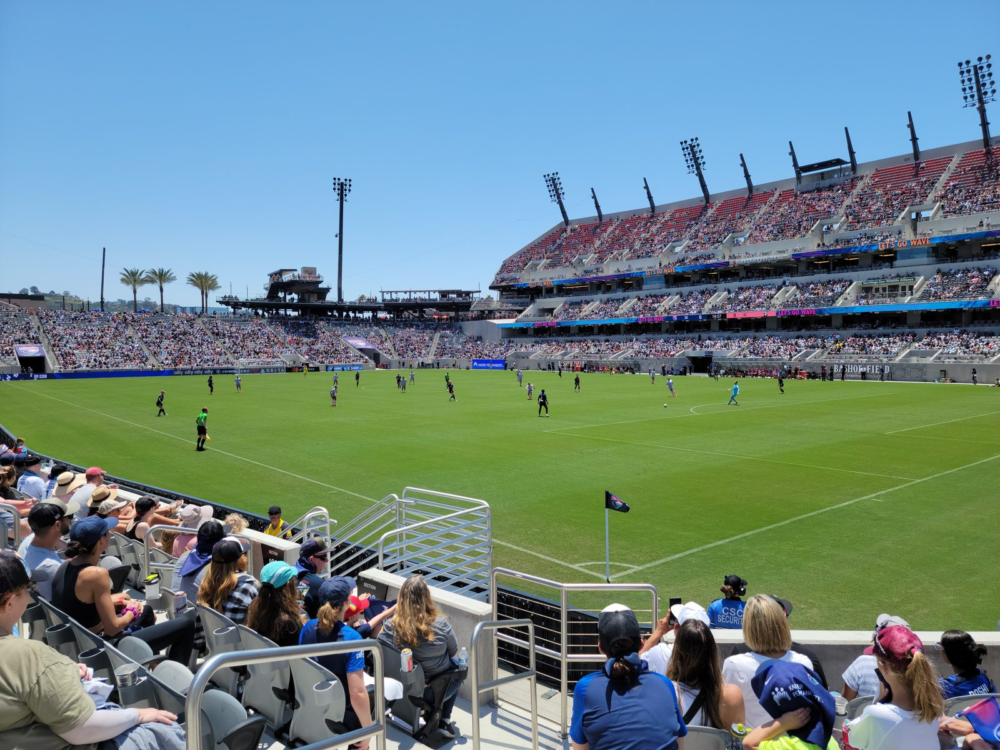

The Night the Math Ran Out: Vancouver 4–1 SDFC Ends the Playoff Dream
There are losses that sting, and there are losses that settle something. Wednesday night in Vancouver was the second kind. San Diego FC fell 4–1 to the Whitecaps at BC Place, and with it, the playoff race that had survived on hope and tiebreakers for weeks finally, mathematically, ended.
It was the tenth straight game without a win. It was also, in a cruel symmetry, a second 4-goal defeat to the same opponent: Vancouver had already beaten SDFC 4–2 at Snapdragon back in May. The West leaders did not need to be brilliant to end San Diego's season. They just needed to be ruthless in the moments SDFC were not.
How it happened
Vancouver opened the scoring in the 24th minute through Cvetkovic, and the game tilted from there. Brian White — the Whitecaps' talisman, scoring his team-leading 18th goal of the season and the 100th of his MLS career — doubled the lead in the 42nd minute. At 2–0 down at halftime, away from home, against the team sitting top of the West, the mountain was already steep.
It got steeper after the break. Ryan Gauld, who also set one up, made it 3–0 in the 66th minute, and Caicedo added a fourth. San Diego did find a response of sorts: Valakari headed one in during the 83rd minute, his fifth goal of the season, to at least put a goal on the board. But 4–1 was the story, and the story was over long before the final whistle.
One footnote from the night said something about where Vancouver are as a club: Thomas Müller came off the bench for his first appearance since October 6, returning from a hamstring injury. The West leaders, already four points clear of Dallas at 17-8-7 and 58 points, were getting a World Cup winner back for the run-in. San Diego, meanwhile, were watching their season end.
What elimination actually means
The numbers. The loss leaves SDFC at 8-13-11, 35 points, 13th in the West, with a winless run now at ten games (0-5-5). Two games remained after Vancouver, and even winning both could no longer lift San Diego above the playoff line. That is the definition of eliminated — not "probably out," not "needing a miracle." Out.
The context makes it hurt more. This was supposed to be the follow-up to a dream debut season. In 2025, the expansion club topped the West and reached the Western Conference Final. This year, SDFC were trying to become the first expansion club to reach the playoffs in each of its first two seasons since Nashville did it in 2020–21. Instead, a season that began with that ambition ends with a winless autumn and a 13th-place finish to play for.
The draw that kept hope alive. Just four days earlier, SDFC had snatched a 2–2 draw with Seattle at Snapdragon on Fan Appreciation Night — down 2–0, back through a Bakambu brace, the stadium roaring at the death. That night kept the flicker alive. Vancouver blew it out. Football can be that abrupt: one Saturday you are refusing to lose, the next Wednesday the math says stop counting.
What the last two games are still for
Elimination does not make the remaining games meaningless — it changes what they mean. Saturday at St. Louis was a chance to end a ten-game winless run before the home finale, to give a young squad a win to carry into the winter, and to show the fans who kept showing up that the team had not checked out. Then Decision Day at Snapdragon, on November 7 against Sporting Kansas City, becomes something else entirely: a farewell to a difficult season, in front of the home crowd, with nothing left to lose and a full stadium still worth playing for.
Seasons are judged in the end, and this one will be judged harshly — fairly, too. A ten-game winless run, a playoff miss after a conference-final debut, a defense that conceded four twice to the same team. But the judgment does not have to be the whole story. The club that topped the West as an expansion team is still in there somewhere. The winter will decide whether this season was a blip or a warning. The last two games are where the players start answering that question.

See you at Snapdragon for the finale. The playoffs are gone. The club is not.